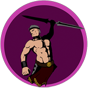
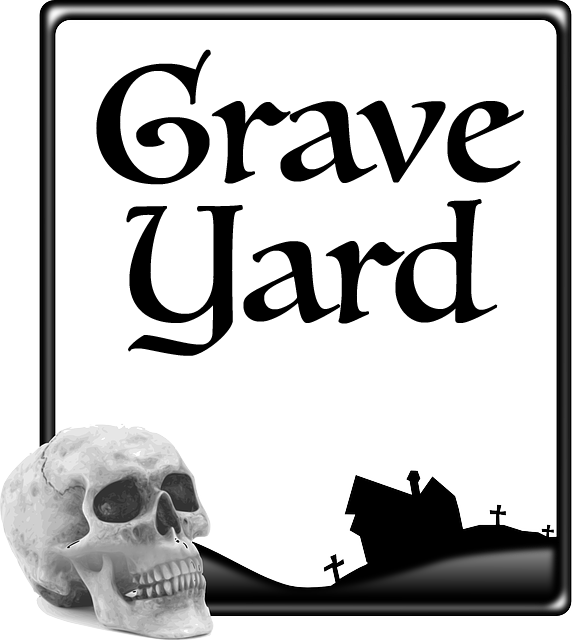

Maps
Click on map squares to cycle through terain options and build your map.
Saved maps are located at the bottom of the screen.
Drag character and monster tokens for live play!
SAVE MAP
Map Saved Below
CLEAR MAP
RETURN TO SITE

Get New
Enemy
1
Get New
Big Enemy
1

Maps You've Made:
Right Click on a Map to Save to Your Computer